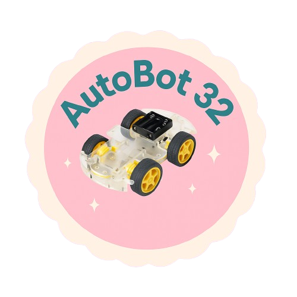
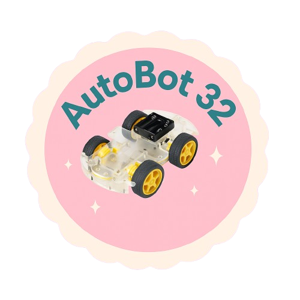

Recurso estudiantes carro
Introducción
Nombre del Proyecto
Introducción
Proyecto: Construcción de un carro a control remoto con ESP32 y Bluetooth
Duración: 5 semanas
Sobre el proyecto
Este proyecto consiste en un curso de programación o electrónica dirigido a estudiantes de escuelas municipales del cantón Loja, con el objetivo de que puedan aprender a construir y programar un carro robot. A través de esta experiencia práctica, los estudiantes tendrán la oportunidad de familiarizarse con la tecnología de ESP32 y desarrollar habilidades técnicas y de pensamiento computacional. El proyecto ofrece una experiencia de aprendizaje activa y desafiante, permitiendo a los docentes fortalecer sus conocimientos y competencias en áreas relacionadas con la robótica y la programación.
Propósito
Promover un aprendizaje significativo e innovador mediante la integración de la robótica educativa, la programación y el uso de herramientas tecnológicas como MIT App Inventor. El proyecto busca desarrollar en los estudiantes el pensamiento lógico, las competencias digitales y el trabajo en equipo, al tiempo que fortalece las capacidades pedagógicas y técnicas de los docentes en áreas vinculadas con la tecnología.
Participantes
Estudiantes del Séptimo ciclo de laCarrera de Pedagogía de las Ciencias Experimentales Informática de la Universidad Nacional de Loja.
Currículo priorizado
Señala que el aprendizaje debe desarrollarse a través de una variedad de procesos, por lo cual los estudiantes deben ser capaces de poner en práctica un repertorio amplio de habilidades cognitivas, sociales y tecnológicas. En este marco, el presente proyecto busca fomentar experiencias educativas activas, integradoras y significativas mediante la aplicación de conocimientos en contextos reales.
Objetivos
Objetivo General:
Diseñar e implementar un carro de control remoto basado en ESP32 como recurso didáctico para fortalecer el aprendizaje de la robótica educativa en el aula.
Objetivos Específicos:
- Diseñar el prototipo funcional de un vehículo controlado de forma inalámbrica.
- Programar la placa ESP32 para controlar los movimientos del carro mediante conexión Bluetooth o Wi-Fi.
- Integrar el carro en actividades educativas que favorezcan la comprensión de conceptos de electrónica y programación.
Requisitos previos
Para una participación efectiva en el proyecto Autobot32, se requiere que los estudiantes cuenten con conocimientos previos fundamentales que les permitan comprender y desarrollar adecuadamente las diferentes etapas del proyecto. Estos conocimientos previos abarcan las siguientes áreas:
- Herramientas digitales para diseño y simulación.
Componentes electrónicos fundamentales: motores,ESP32,Módulo L298N, etc. - Uso de herramientas electrónicas: multímetro, protoboard, cautín para soldadura, entre otros.
- Entendimiento básico de conceptos relacionados con la informática, redes y dispositivos computacionales, necesarios para la integración del control remoto mediante Bluetooth o Wi-Fi con la placa ESP32.
Criterio de evaluación
Aplica conocimientos básicos de programación y electrónica para resolver un problema mediante la construcción de un prototipo funcional (carro a control remoto).
🧩 Componentes del robot (usados a lo largo del proyecto):
| N.º | Componente | Función |
| 1 | ESP32 (x1) | Control central del robot; permite conectividad y programación. |
| 2 | Módulo L298N (x1) | Controla la velocidad y dirección de los motores. |
| 3 | Chasis (x1) | Base para ensamblar todos los componentes. |
| 4 | Motores DC (x2) | Proveen el movimiento al robot. |
| 5 | Ruedas (x2) | Permiten el desplazamiento físico. |
| 6 | Baterías (x2) | Fuente de energía para ESP32 y motores. |
| 7 | Computadora portátil (x1) | Se usa para cargar programas y hacer pruebas. |
Destreza con criterio de desempeño
| Diseña y construye un vehículo robótico utilizando una placa ESP32, integrando sensores, motores y módulos de comunicación, que responda a instrucciones externas a través de una aplicación móvil desarrollada con App Inventor. |
Indicador de evaluación
| Diseña y construye un prototipo robótico con una placa ESP32, integrando sensores, actuadores y módulos de comunicación, que responda a instrucciones externas mediante una aplicación móvil desarrollada en App Inventor, aplicando principios de programación, electrónica básica y resolución de problemas en contextos reales. |
Obra publicada con Licencia Creative Commons Reconocimiento Compartir igual 4.0